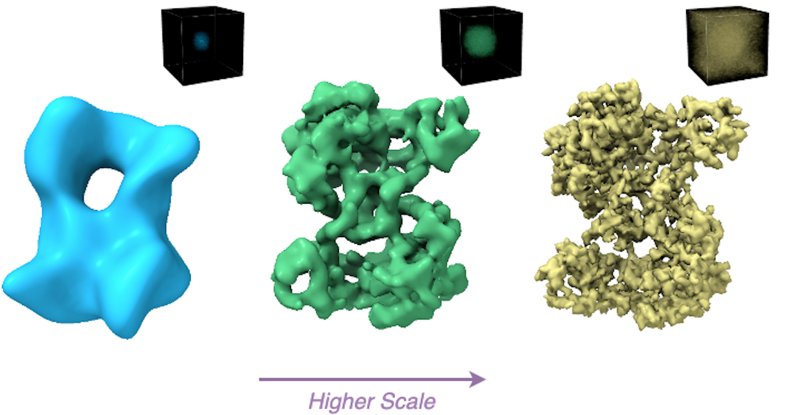
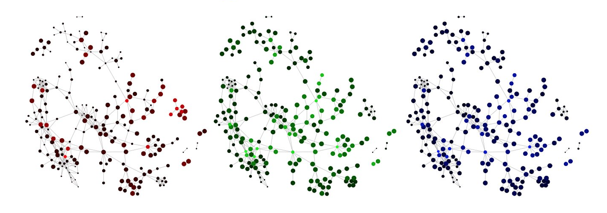
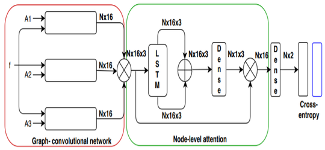
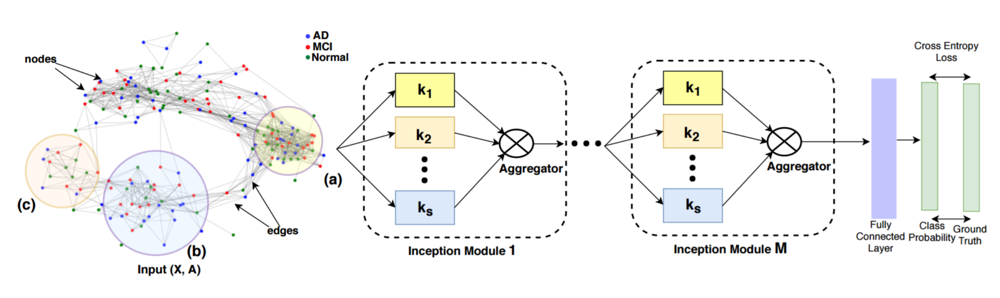
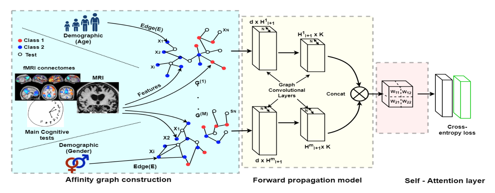

|
I am a 2nd year Computer Science PhD Student at University of Toronto
supervised by David Fleet and Marcus Brubaker.
I am also a graudate student affiliated with Vector Institute.
CV /
LinkedIn /
Google Scholar /
Github /
Twitter
|

|
|
My research interests broadly span computer vision and machine learning. In particular, I am interested in the 3D reconstruction problem in cryoEM. I use recent advances in implicit representation learning in modeling protein structures. |
|  |
Shayan Shekarforoush, David Lindell, David Fleet, Marcus Brubaker NeurIPS 2022 arXiv / project page / code A new coordinate network and training scheme for optimizing multi-scale representation in a coarse-to-fine fashion. |
|  |
Elyas Heidari, Shayan Shekarforoush, Laleh Haghverdi EuroBioc 2020 code A software package in R and python to apply geometric deep learning models for gene regulatory networks. |
|  |
Anees Kazi, Shayan Shekarforoush, S.Arvind Krishna, Hendrik Burwinkel, Gerome Vivar, Benedict Wiestler, Karsten Kortum, Seyed-Ahmad Ahmadi, Shadi Albarqouni, Nassir Navab MICCAI 2019 Combining LSTM-based attention mechanism and GCNs. |
|  |
Anees Kazi*, Shayan Shekarforoush*, S.Arvind Krishna, Hendrik Burwinkel, Gerome Vivar, Karsten Kortuem, Seyed-Ahmad Ahmadi, Shadi Albarqouni, Nassir Navab IPMI 2019 arXiv / code We define geometric Inception modules capable of capturing intra and inter-graph structural heterogeneity thanks to multiple kernels of different sizes. |
|  |
Anees Kazi, S.Arvind Krishna, Shayan Shekarforoush, Karsten Kortuem, Shadi Albarqouni, Nassir Navab ISBI 2019 arXiv Introducing self-attention layer to GCNs which learns relations between indiviudal demographic data and diseases. |
|
|
|
University of Toronto |
|
|
Sharif University of Technology |
|
Template adapted from Jon Barron. |